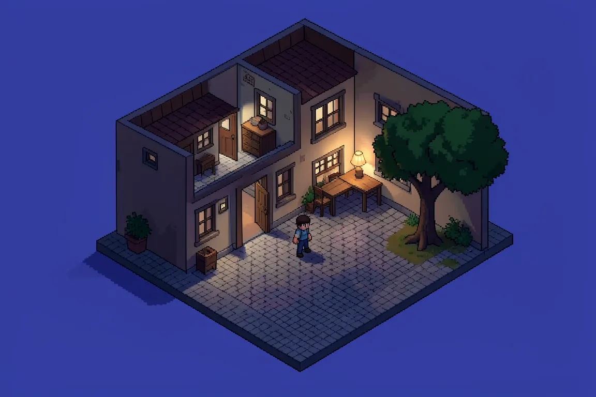

The world is seen from above at a fixed angle with 2:1 pixel diagonals. Rooms become boxes cut open on two sides, so a player reads walls, floor and furniture at once.

Core thesis
A fixed 2:1 diagonal gives depth with no perspective, so a room can be read whole like an architect's axonometric drawing.
Design principles
Draw every edge at 2:1 (about 26.6°) or vertical.
Build floors from diamond tiles 2 times as wide as they are high.
Cut walls open on the two near sides so the inside shows.
Light each block from one side: top light, left mid, right dark.
Keep the same scale in the whole scene; nothing shrinks with distance.
Sort objects back to front by their floor position.